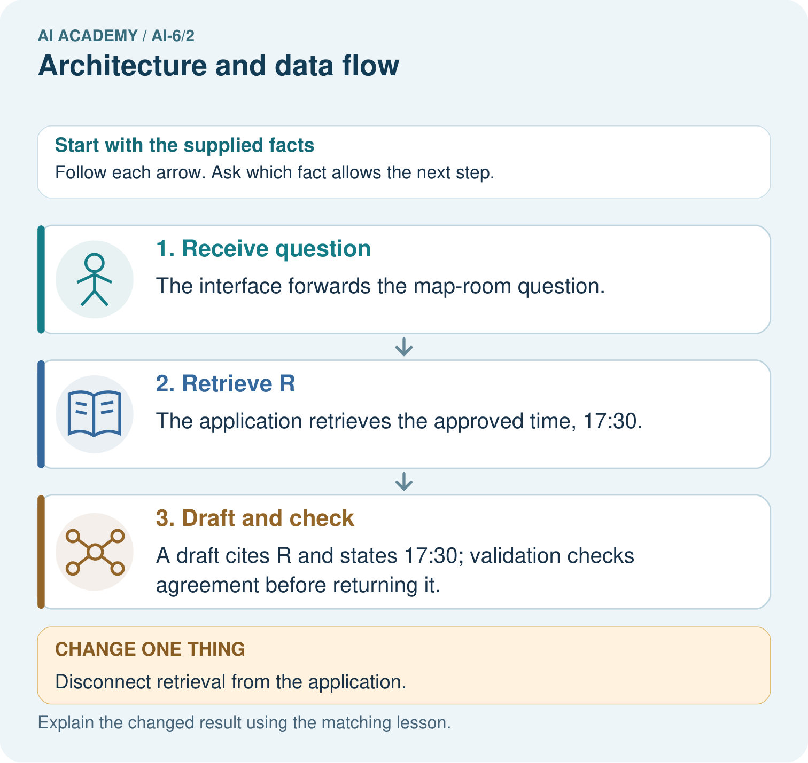
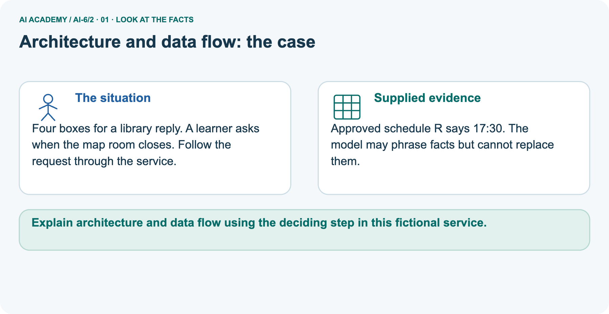
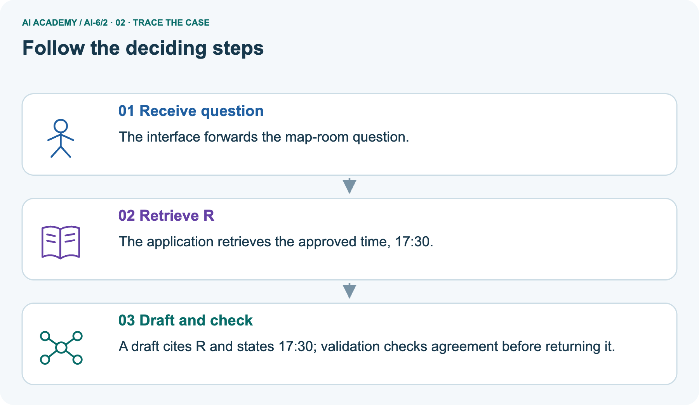
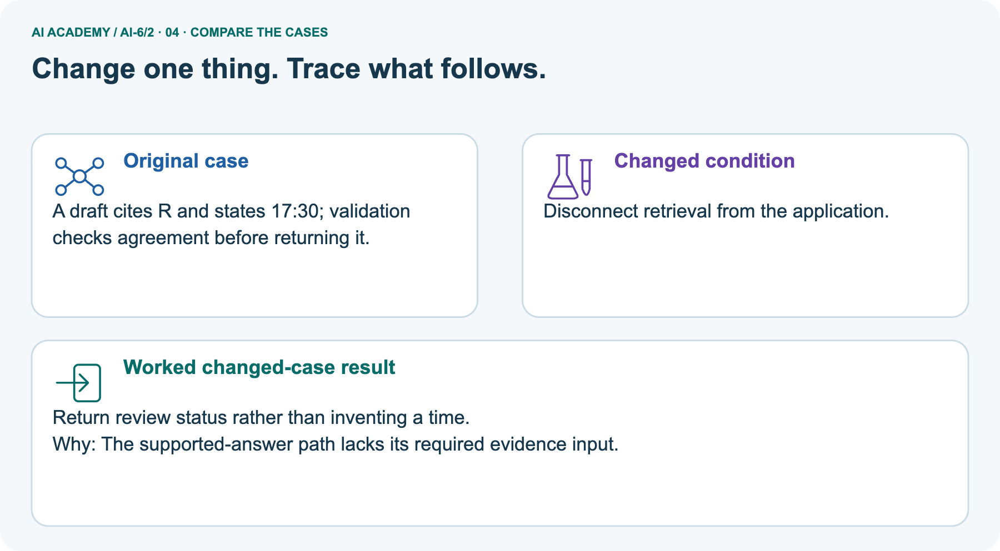
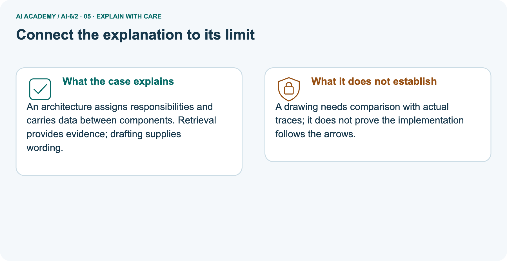
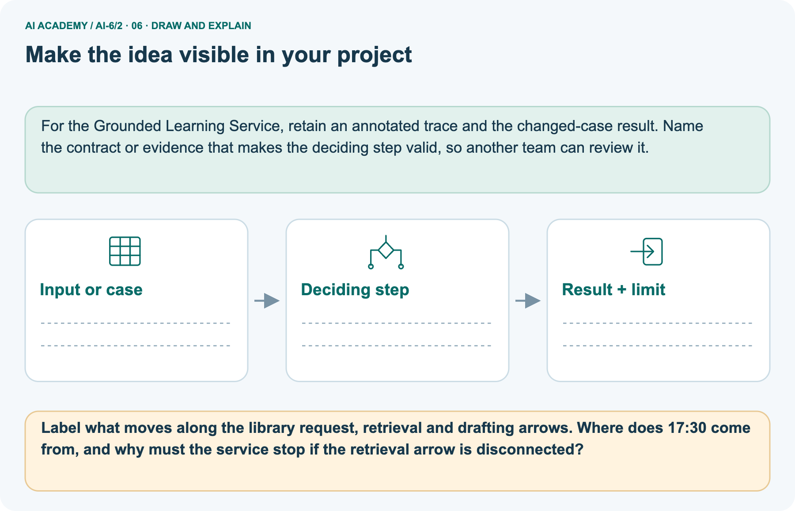

AI Academy · Level 6 · Grade 11 · Week 2 · Workbook
Architecture and data flow
Learn to understand, design, build, test and explain AI systems responsibly.
Project: Grounded Learning Service
THE CONNECTED WEEK
One complete architecture and data-flow record.
Keep component jobs, trust boundaries, source roles and actual stage traces together.
Keep one habit: Recall → W1–W3/W5 → independent earliest stop → project architecture → delayed return.
Main lesson · Section 1
Recall · Retrieve before notes
Keep this task’s inputs,rule and response together.
Complete task and evidence
Try the recall before opening notes. Then use a different colour or a labelled second line to correct your explanation.
Without opening the old lesson, explain one key idea from Requirements and service boundaries. Give an example and a mistake that the idea helps you avoid.
Use this reference for the original W1–W3 and W5 exercises. The separately named independent case supplies its own changed facts; use those facts for that attempt before feedback.
Architecture assigns responsibilities to components and shows information crossing trust boundaries. A diagram should include failure paths.
Trace request validator -> role filter -> source lookup -> response validator -> result. Sources enter as data, not control instructions. Reject invalid requests before any downstream lookup.
Requirements and service boundaries
Lesson reference for workbook practice
Main lesson · Section 5
W1 · Explain the current example
Keep this task’s inputs,rule and response together.
Complete task and evidence
Architecture route: request validator → trusted-role filter → approved source lookup → drafting → response validator → result. Invalid input stops before lookup. Access filtering must occur before restricted content enters lookup/context; hiding a later citation does not undo exposure.
Toy sources S student-visible time 16:00 and T teacher-only time 18:00; caller student supplied by trusted test harness, not request body or authentication. Exact request shape {source_id: nonempty string}. Student S path reaches all stages and returns S/16:00. Student T stops denied after role_filter, no source body lookup or draft. Missing X returns review after lookup, no draft.
Incorrect draft S/19:00 returns review after output check. A request-added role field is invalid, not a promotion. Separate library picture uses approved R/17:30; without retrieval return review. Diagram must be compared with event traces. Deterministic simulation has no model call, network, production authentication or complete security/correctness guarantee.
Explain the weekly mechanism in your own words. Use the worked scenario to name its input, decision rule and output.
Main lesson · Section 6
W2 · Trace the calculation
Keep this task’s inputs,rule and response together.
Complete task and evidence
Architecture route: request validator → trusted-role filter → approved source lookup → drafting → response validator → result. Invalid input stops before lookup. Access filtering must occur before restricted content enters lookup/context; hiding a later citation does not undo exposure.
Toy sources S student-visible time 16:00 and T teacher-only time 18:00; caller student supplied by trusted test harness, not request body or authentication. Exact request shape {source_id: nonempty string}. Student S path reaches all stages and returns S/16:00. Student T stops denied after role_filter, no source body lookup or draft. Missing X returns review after lookup, no draft.
Incorrect draft S/19:00 returns review after output check. A request-added role field is invalid, not a promotion. Separate library picture uses approved R/17:30; without retrieval return review. Diagram must be compared with event traces. Deterministic simulation has no model call, network, production authentication or complete security/correctness guarantee.
A student request bypasses the role filter and sends teacher records directly to a generator. Show the intermediate steps and give the conclusion with its scope.
Main lesson · Section 7
W3 · Repair a misconception
Keep this task’s inputs,rule and response together.
Complete task and evidence
Architecture route: request validator → trusted-role filter → approved source lookup → drafting → response validator → result. Invalid input stops before lookup. Access filtering must occur before restricted content enters lookup/context; hiding a later citation does not undo exposure.
Toy sources S student-visible time 16:00 and T teacher-only time 18:00; caller student supplied by trusted test harness, not request body or authentication. Exact request shape {source_id: nonempty string}. Student S path reaches all stages and returns S/16:00. Student T stops denied after role_filter, no source body lookup or draft. Missing X returns review after lookup, no draft.
Incorrect draft S/19:00 returns review after output check. A request-added role field is invalid, not a promotion. Separate library picture uses approved R/17:30; without retrieval return review. Diagram must be compared with event traces. Deterministic simulation has no model call, network, production authentication or complete security/correctness guarantee.
A report omits this qualification: A component diagram is a plan, not evidence that the running implementation enforces its arrows.
Explain how omitting it could change a reader's interpretation, and write an accurate replacement.
Main lesson · Section 9
W5 · Explain the limitation
Keep this task’s inputs,rule and response together.
Complete task and evidence
Architecture route: request validator → trusted-role filter → approved source lookup → drafting → response validator → result. Invalid input stops before lookup. Access filtering must occur before restricted content enters lookup/context; hiding a later citation does not undo exposure.
Toy sources S student-visible time 16:00 and T teacher-only time 18:00; caller student supplied by trusted test harness, not request body or authentication. Exact request shape {source_id: nonempty string}. Student S path reaches all stages and returns S/16:00. Student T stops denied after role_filter, no source body lookup or draft. Missing X returns review after lookup, no draft.
Incorrect draft S/19:00 returns review after output check. A request-added role field is invalid, not a promotion. Separate library picture uses approved R/17:30; without retrieval return review. Diagram must be compared with event traces. Deterministic simulation has no model call, network, production authentication or complete security/correctness guarantee.
For the worked scenario, propose one additional case that could reveal a failure, describe its expected outcome before running it, and explain what would need to remain fixed for a fair comparison.
Do not reuse W4 as a new final test after receiving feedback.
Main lesson · Section 4
Try alone · Selected transfer
Keep this task’s inputs,rule and response together.
Complete task and evidence
Input is malformed, yet lookup runs and then a validator rejects output. Locate the first stage that should stop.
Attempt this case before feedback. Record any help. Earlier examples below are further practice; a case already practised with feedback cannot establish fresh transfer.
Independent case: Apply a new case independently
Main lesson · Section 10
Project · Keep the service evidence
Preserve the contract, inputs, observed outcomes and limits.
Complete task and evidence
Add a labelled architecture and data flow evidence sheet to Grounded Learning Service. Show how you can explain the mechanism and terminology of architecture and data flow.
Use the supplied fictional case and keep its inputs, intermediate steps, calculation or prediction, and limitation. Connect this record to last week’s record; a matching answer without a trace is insufficient.
Main lesson · Section 11
Feedback · Repair and return
Keep this task’s inputs,rule and response together.
Complete task and evidence
Revisit this idea with your teacher after a delay. Familiarity is different from explaining and using it on a changed case.
| Evidence | My record |
|---|---|
| Worked alone / hint / model | |
| First step I repaired and why | |
| New case checked later; date and result | |
| What I can now explain without notes | |
| One remaining question |
Reference bank and extra practice
Choose the reference that helps your next step.
Reference · Supported W2 record
Reference · Section 2
Reference · Supported W2 record
Keep this task’s inputs,rule and response together.
Complete task and evidence
Use W2: Trace the worked case for Architecture and data flow. Record the answer once; the lesson and workbook refer to the same attempt.
| Given inputs | Procedure I chose | Middle steps | Result and check |
|---|---|---|---|
Extra practice · Individual reasoning check
Reference · Section 3
Extra practice · Individual reasoning check
Keep this task’s inputs,rule and response together.
Complete task and evidence
Use the worked case for Architecture and data flow. Proposed explanation: “The worked result establishes every future case”. Decide whether this explanation is supported.
Point to the step or supplied fact that decides; explain your repair if needed.
Reference · Earlier W4 response copy
Reference · Section 8
Reference · Earlier W4 response copy
Keep this task’s inputs,rule and response together.
Complete task and evidence
Input is malformed, yet lookup runs and then a validator rejects output. Locate the first stage that should stop.
Extra practice · Pictured case
Reference · Section 12
Extra practice · Pictured case
Keep this task’s inputs,rule and response together.
Complete task and evidence
Four boxes for a library reply. A learner asks when the map room closes. Follow the request through the service.
Approved schedule R says 17:30. The model may phrase facts but cannot replace them.
Label what moves along the library request, retrieval and drafting arrows. Where does 17:30 come from, and why must the service stop if the retrieval arrow is disconnected?
Support used: alone / hint / worked example. This record is practice evidence.
Project connection: For the Grounded Learning Service, retain an annotated trace and the changed-case result. Name the contract or evidence that makes the deciding step valid, so another team can review it.



Reference · Project milestone
Reference · Section 13
Reference · Project milestone
Keep this task’s inputs,rule and response together.
Complete task and evidence
Project: Grounded Learning Service
Current milestone: Frame the need. Name the user, the problem, allowed inputs and a safe simple starting method.
For the Grounded Learning Service, retain an annotated trace and the changed-case result. Name the contract or evidence that makes the deciding step valid, so another team can review it.
| Evidence to keep | My record |
|---|---|
| This week’s input and deciding step | |
| Prediction and actual result (or labelled paper trace) | |
| One change since the previous checkpoint and why | |
| One error or limit and the next test |
Extra practice · Predict,check and repair
Reference · Section 14
Extra practice · Predict,check and repair
Keep supported feedback separate from the independent case.
First supported question and optional hint
Four boxes for a library reply. A learner asks when the map room closes. Follow the request through the service.
Which labelled step matches this detail? A draft cites R and states 17:30; validation checks agreement before returning it.
1. Retrieve R
2. Draft and check
3. Receive question
Hint if needed: Read the steps in the pictorial case. Match the supplied detail to the stage that performs or records it.
Practice 1: explain the deciding evidence
Check after the first attempt
After your attempt, compare with the supported explanation: Draft and check A draft cites R and states 17:30; validation checks agreement before returning it.
An architecture assigns responsibilities and carries data between components. Retrieval provides evidence; drafting supplies wording.
Changed-case question and optional hint
Changed-case practice: Disconnect retrieval from the application. Which conclusion is supported by the supplied facts?
1. Return review status rather than inventing a time.
2. This one example guarantees correct results for every future input.
3. We can decide the result without examining the changed input or the procedure.
Hint if needed: Use the changed condition and the deciding step in the pictorial trace. The answer must say what follows from those facts.
Practice 2: explain the deciding evidence
Check after the changed attempt
After your attempt, compare with the supported explanation: Return review status rather than inventing a time. The supported-answer path lacks its required evidence input.
Repair and retain the record
Review Requirements and service boundaries (ai-6/1). Goal: Explain the mechanism and terminology of requirements and service boundaries. Short practice: Split the museum visitor’s request into two operations.
Which can the service perform for P, and what happens to each operation when Q has no approved card?. Return to this week and explain what you changed.
Use Download completed work in the hosted lesson to export your answers, reflections, practice feedback and code-run evidence. Open the HTML copy to read or print it.
Drafts stay in this browser when storage is available; clear drafts on a shared device.
Earlier wording, alternatives and picture transcripts
Use this supported practice once, in the browser or on paper. Keep the reserved independent assessment for a separate first attempt before teacher feedback.
Repair a missing building block
Keep your completed work
Reference · Six-picture response sheets
Reference · Section 15
Reference · Six-picture response sheets
Choose the picture that helps explain the current step.
01. Architecture and data flow: the case



Four boxes for a library reply. A learner asks when the map room closes. Follow the request through the service. Supplied facts: Approved schedule R says 17:30. The model may phrase facts but cannot replace them.
Point to the given fact that matters most. Explain why it matters.
02. Follow the deciding steps



Receive question: The interface forwards the map-room question. → Retrieve R: The application retrieves the approved time, 17:30. → Draft and check: A draft cites R and states 17:30; validation checks agreement before returning it.
Point to each numbered stage and explain which recorded input it uses.
03. Architecture and data flow — evidence trace


Architecture and data flow — evidence trace.
A student request bypasses the role filter and sends teacher records directly to a generator. | Trace request validator -> role filter -> source lookup -> response validator -> result.
Sources enter as data, not control instructions. Reject invalid requests before any downstream lookup. | The data path crosses the access boundary incorrectly.
Move the role filter before source lookup/context construction; hiding a later citation is insufficient.
Read the labels and values. Explain the relationship the model shows.
04. Change one thing. Trace what follows.



Original case: A draft cites R and states 17:30; validation checks agreement before returning it. Changed condition: Disconnect retrieval from the application.
Expected result: Return review status rather than inventing a time. Reason: The supported-answer path lacks its required evidence input.
Predict before checking the worked changed-case result. Name what changed and what the supplied facts allow you to conclude.
05. Connect the explanation to its limit



An architecture assigns responsibilities and carries data between components. Retrieval provides evidence; drafting supplies wording.
Limit: A drawing needs comparison with actual traces; it does not prove the implementation follows the arrows.
Explain the case, then point to a limit on the claim.
06. Make the idea visible in your project



For the Grounded Learning Service, retain an annotated trace and the changed-case result. Name the contract or evidence that makes the deciding step valid, so another team can review it.
Draw your input, deciding step, result and limit. Supported question: Label what moves along the library request, retrieval and drafting arrows.
Where does 17:30 come from, and why must the service stop if the retrieval arrow is disconnected?
Draw your project trace and justify the deciding step using evidence.